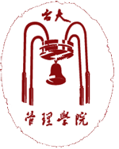
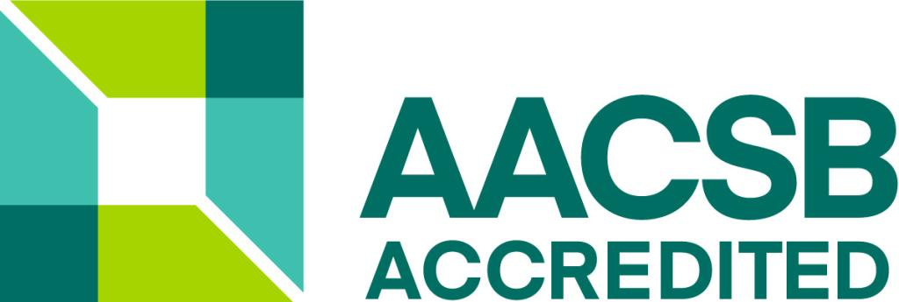
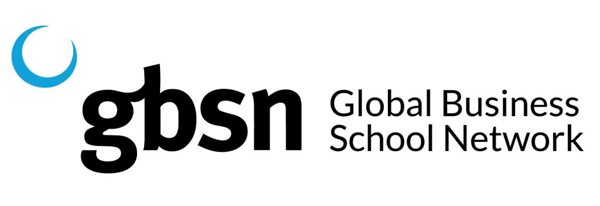

NTU Finance / Visual Brief
臺大財務金融學系暨研究所
從成立沿革、教育理念、課程設計、國際化與產學合作，整理成圖文版 HTML PPT。
教學現場

從成立沿革、教育理念、課程設計、國際化與產學合作，整理成圖文版 HTML PPT。
臺大財金系自 1985 年成立，由大學部逐步擴展到碩士班、博士班與財金 EMBA，反映臺灣經濟發展、金融市場自由化與國際化的人才需求。
大學部、碩士班、博士班、EMBA。
財務金融、財務工程、保險、不動產、程式與財金法。
法學院商學系分組，銀行組成為財金系前身。
「銀行」更名為財務金融，接軌國際金融潮流。
成立碩士班、擴增大學部名額、成立博士班。
開辦財金 EMBA，並發展財務工程與保險組。
財金系不只提供完整財務金融專業教育，也重視學生面對金融服務業挑戰時的敬業與服務態度。
財務管理、證券投資、金融、保險。
財務工程、不動產、程式、財金法。
建教合作、實習、獎學金與企業交流。
近年與臺大醫學系、臺大電機系並列全國三大類組龍頭系所。
長期高居商管學院第一志願。
持續推動財務、金融、證券期貨等精深研究。
以國際財務金融領域發光為長期方向。
加強財金專業課程，也鼓勵修習管理相關課程。
在校培養互助精神，未來在工作上發揮團隊貢獻。
鼓勵師生研究財金問題，透過學術活動發表討論。
邀請實務界與學術界專家演講座談，並進行企業參訪。

AACSB 認證財金系學生除英文外，亦有相當比例選修其他外語；研究所商業英文為必修，並有許多學生申請國外大學交換。

這些視覺符號適合用來呈現台大管理學院在國際商管教育網絡中的公信力與連結。
國際交流、彈性員額、跨校跨領域教研合作。
推動財務金融學域與證券期貨精深研究。
兼任專家、獎學金、實習、企業諮詢與活動贊助。
核心課程、選修課程、實務課程與專題研究並進。
整理學制、課程、交換、產學合作與常見問題。
依職涯方向推薦財務、投資、財工、保險與不動產課程路徑。
把銀行組到財金系的歷程做成互動時間軸。
協助學生理解實習、獎學金、企業合作機會。
整理外語、交換、國際研討與申請準備建議。
臺大財金系的核心價值，是把臺灣頂尖學生、完整財金訓練、實務連結與國際化視野整合在同一套人才培育系統中。
這份網頁最適合重製成「系所品牌簡報」：歷史、聲望、課程、產學、國際化與未來發展一次講清楚。
資料來源：國立臺灣大學管理學院財務金融學系暨研究所網頁；整理與圖文設計：文文
每份簡報底部都有五個固定按鍵。按鍵會顯示「符號 + 中文小字」，手機與桌面都可以直接點選。
回到前一張投影片。
前往下一張投影片。
打開全部投影片目錄。
顯示本頁重點摘要。
切換沉浸/專注模式。